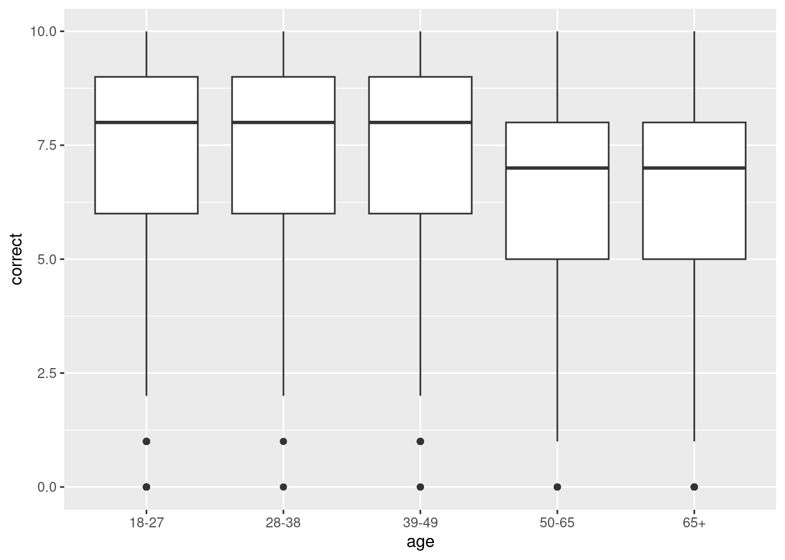
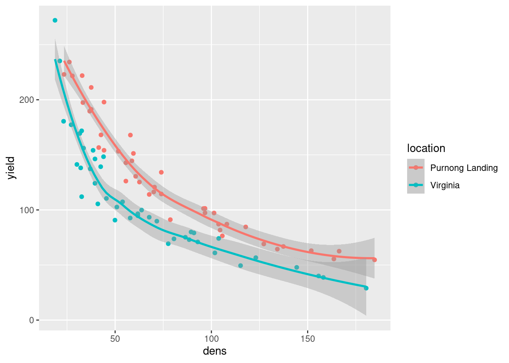
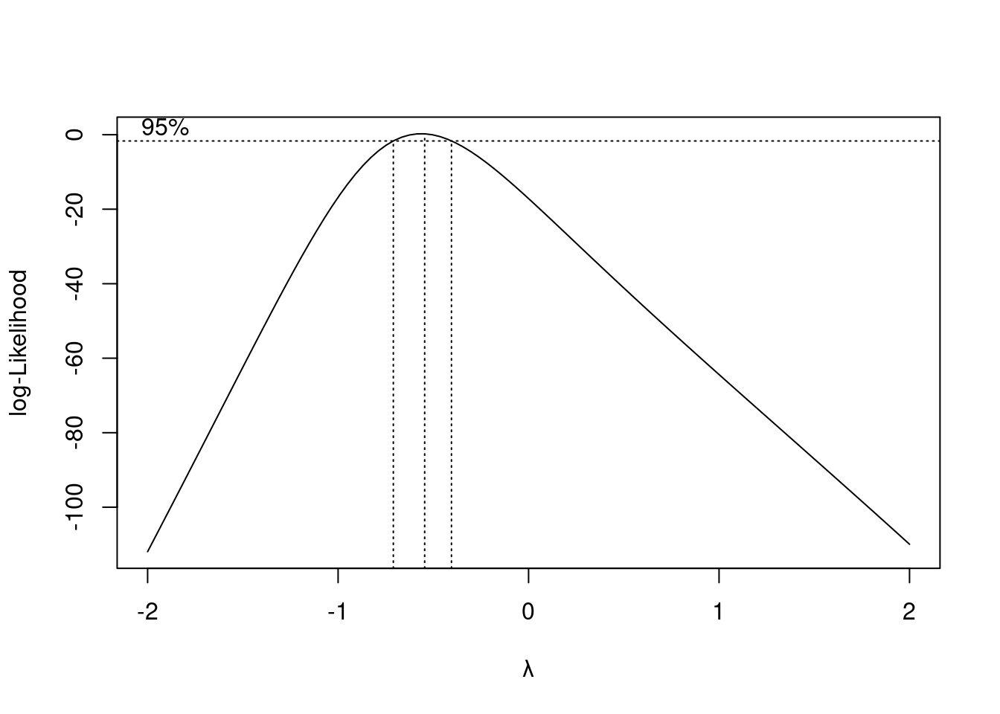
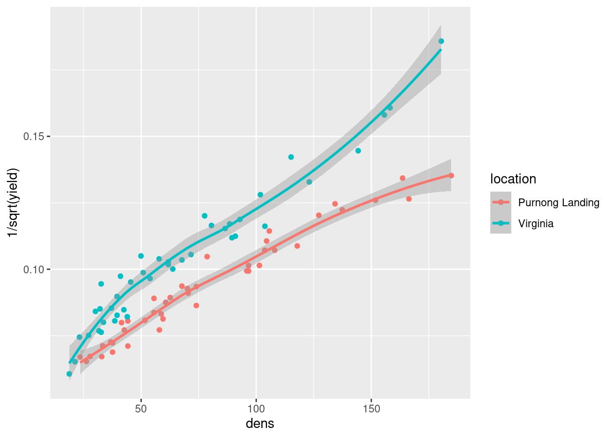

── Conflicts ────────────────────────────────────────── tidyverse_conflicts() ──
✖ dplyr::filter() masks stats::filter()
✖ dplyr::lag() masks stats::lag()
ℹ Use the conflicted package (<http://conflicted.r-lib.org/>) to force all conflicts to become errors
library(car)
Loading required package: carData
Attaching package: 'car'
The following object is masked from 'package:dplyr':
recode
The following object is masked from 'package:purrr':
some
Rows: 5035 Columns: 2
── Column specification ────────────────────────────────────────────────────────
Delimiter: ","
chr (1): age
dbl (1): correct
ℹ Use `spec()` to retrieve the full column specification for this data.
ℹ Specify the column types or set `show_col_types = FALSE` to quiet this message.
First thing we make sure is that the five numbers within each contrast add up to zero (this is actually the definition of a contrast). The second thing to worry about is that the number on the bottom of a fraction (in the last two contrasts) represents the number of means in a group we are comparing. For example, for the last one, we are comparing the three youngest groups (so the weight for each of these should be 1/3) against the two oldest groups (so the weight for each of those should be 1/2 with the opposite sign).
The order of the numbers in each contrast is the same as the order of the age groups that you found with count above: that is, the first number corresponds to the 18–27 age group, and so if it zero, it means that the 18–27 age group does not figure in that contrast.
Alternatives: We can multiply a contrast through by any constant, which could be −1 (which will flip all the signs), or by something that will make the weights whole numbers (eg., 6 for the last one, so that the weights become 2 three times followed by −3 twice). Doing this won’t stop any contrast from being a contrast (the five weights will still add up to zero) and won’t change the orthogonal-ness of any contrasts.
Three steps:
glue the contrasts together into a matrix
set that as contrasts for your factor column
run the ANOVA as if it is a regression
Each column has the name of its contrast, and the contrast weights can be read down the columns. The purpose of the contrasts line is to set lm up so that the “regression slopes” become the contrasts we want to test.
A more mathematical way to check for orthogonality is to work out m -transpose matrix-multiplied by m:
This is a shorthand way of checking all the contrasts for orthogonality with each other. Ignore the numbers down the diagonal (top-left to bottom-right), since a contrast is not going to be orthogonal with itself; as long as all the off-diagonal numbers are zero, the contrasts are orthogonal.
summary(survey.1)
Call:
lm(formula = correct ~ age, data = survey)
Residuals:
Min 1Q Median 3Q Max
-7.5186 -1.6635 0.3104 1.5219 3.3365
Coefficients:
Estimate Std. Error t value Pr(>|t|)
(Intercept) 7.171768 0.032520 220.537 <2e-16 ***
ageyoungest 0.004817 0.057243 0.084 0.933
ageoldest -0.013085 0.039719 -0.329 0.742
ageyoung_vs_middle 0.023785 0.067651 0.352 0.725
ageyoung_vs_old 0.990442 0.074109 13.365 <2e-16 ***
---
Signif. codes: 0 '***' 0.001 '**' 0.01 '*' 0.05 '.' 0.1 ' ' 1
Residual standard error: 2.157 on 5030 degrees of freedom
Multiple R-squared: 0.03439, Adjusted R-squared: 0.03362
F-statistic: 44.78 on 4 and 5030 DF, p-value: < 2.2e-16
the two youngest age groups do not differ significantly (in ability to detect fact from opinion in news statements)
the two oldest age groups do not differ significantly (ditto)
the two youngest age groups (taken together) do not differ significantly from the 39–49 age group the three youngest age groups do differ significantly (in detecting fact from opinion in news stories) from the two oldest age groups.
ggplot(survey, aes(x = age, y = correct)) +geom_boxplot()

There seems to be a sharp dividing line at age 50, with respondents older than that doing a worse job on average at distinguishing fact from opinion than younger respondents. The boxplot, in fact, tells exactly the same story as the contrasts, but the contrasts come with P-values attached. The sample size is large (over 600 observations in each group), so that even though the above-50 vs. below-50 difference is small, it is very definitely significant.
Rows: 84 Columns: 3
── Column specification ────────────────────────────────────────────────────────
Delimiter: ","
chr (1): location
dbl (2): dens, yield
ℹ Use `spec()` to retrieve the full column specification for this data.
ℹ Specify the column types or set `show_col_types = FALSE` to quiet this message.
`geom_smooth()` using method = 'loess' and formula = 'y ~ x'

These are downward but non-linear trends: they descend quickly at first and then level off.
library(MASS, exclude ="select")
Attaching package: 'MASS'
The following object is masked _by_ '.GlobalEnv':
survey
boxcox(yield ~ dens * location, data = onions)

Inside the boxcox , we put the best model that we know of at the moment (including the interaction, because we don’t know yet whether it can be removed). (That said, the decision is the same if we leave it out on this occasion, but the right thing to do is to put the interaction in “just in case”.)
The best transformation appears to be power −0.5, that is, one over square root, which is in the confidence interval, supporting what the experimenters said.
The second-best way to do it is to re-draw the plot of the previous question, but with yield replaced with one over the square root of yield, and demonstrate that the trends are now straight, or close to it. Once again, use a default smooth rather than a regression line (because we want to see whether the trends are straight, not to assume that they are at this point).
ggplot(onions, aes(x = dens, y =1/sqrt(yield),colour = location)) +geom_point() +geom_smooth()
`geom_smooth()` using method = 'loess' and formula = 'y ~ x'

The trends are at least straighter than they were before, but this does not rule out the possibility that a better transformation could be found (whereas the Box-Cox narrows things down a lot, ruling out the log and reciprocal transformations).
onions.1<-lm(1/sqrt(yield) ~ dens * location, data = onions)
or raise yield to a negative power using ^ , but then its important to remember that ^ has a special meaning in model formulas, so we need to wrap the power in I() to work around that.
onions.1<-lm(I(yield^(-0.5)) ~ dens * location, data = onions)
Then, to see whether we can get rid of the interaction, the best way is this (with an F -test, because it is an ordinary regression):
drop1(onions.1, test ="F")
Single term deletions
Model:
I(yield^(-0.5)) ~ dens * location
Df Sum of Sq RSS AIC F value Pr(>F)
<none> 0.0023146 -873.94
dens:location 1 0.0010544 0.0033690 -844.41 36.443 4.67e-08 ***
---
Signif. codes: 0 '***' 0.001 '**' 0.01 '*' 0.05 '.' 0.1 ' ' 1
and we see that the interaction, with a P-value of 4.7 × 10−8, much less than 0.05, has to stay.
summary(onions.1)
Call:
lm(formula = I(yield^(-0.5)) ~ dens * location, data = onions)
Residuals:
Min 1Q Median 3Q Max
-0.0121384 -0.0031970 -0.0006592 0.0034537 0.0128670
Coefficients:
Estimate Std. Error t value Pr(>|t|)
(Intercept) 5.673e-02 1.781e-03 31.859 < 2e-16 ***
dens 4.667e-04 1.992e-05 23.425 < 2e-16 ***
locationVirginia 4.001e-03 2.412e-03 1.659 0.101
dens:locationVirginia 1.734e-04 2.873e-05 6.037 4.67e-08 ***
---
Signif. codes: 0 '***' 0.001 '**' 0.01 '*' 0.05 '.' 0.1 ' ' 1
Residual standard error: 0.005379 on 80 degrees of freedom
Multiple R-squared: 0.9519, Adjusted R-squared: 0.9501
F-statistic: 527.6 on 3 and 80 DF, p-value: < 2.2e-16
and it happens that the P-value for the interaction is the same. It worked in this case because there were only two locations, and so comparing the slope for Virginia with that of the baseline location Purnong Landing is actually doing the same test. (If there were three locations, it would be a different story.)
Rows: 500 Columns: 4
── Column specification ────────────────────────────────────────────────────────
Delimiter: ","
chr (2): row, col
dbl (2): grain, straw
ℹ Use `spec()` to retrieve the full column specification for this data.
ℹ Specify the column types or set `show_col_types = FALSE` to quiet this message.
wheat
# A tibble: 500 × 4
row col grain straw
<chr> <chr> <dbl> <dbl>
1 E J 3.63 6.37
2 D J 4.07 6.24
3 C J 4.51 7.05
4 B J 3.9 6.91
5 A J 3.63 5.93
6 E J 3.16 5.59
7 D J 3.18 5.32
8 C J 3.42 5.52
9 B J 3.97 6.03
10 A J 3.4 5.66
# ℹ 490 more rows
There are two (quantitative) response variables (the two variables that were measured), namely grain and straw.
wheat.1<-manova(cbind(grain, straw) ~ row * col, data = wheat)summary(wheat.1)
wheat.2<-lm(cbind(grain, straw) ~ row * col, data = wheat)Manova(wheat.2)
Type II MANOVA Tests: Pillai test statistic
Df test stat approx F num Df den Df Pr(>F)
row 4 0.22035 14.704 8 950 < 2.2e-16 ***
col 4 0.21046 13.966 8 950 < 2.2e-16 ***
row:col 16 0.51195 10.214 32 950 < 2.2e-16 ***
---
Signif. codes: 0 '***' 0.001 '**' 0.01 '*' 0.05 '.' 0.1 ' ' 1
The strategy here is to fit a “multivariate regression” using lm with your two-column response variable, and then to display the Manova (uppercase M) of that.5 The result, including the test statistics and degrees of freedom, is the same, so either way is good.
The interaction is significant, so one or both of the amount of grain or straw depends on the combination of row and col in some way.
We are in the happy position of having two response variables rather than more, so we can make a non- three-dimensional graph. Let’s summarize our variables:
If we only had one categorical variable, we could draw a scatterplot with points identified by colour. The best way here is to find out how to distinguish the other categorical variable by something else other than colour, such as plotting symbol (that is, plot the points using different symbols rather than just circles).
The points at the bottom right seem to be different from the others (off the trend of the others), and they are all light blue plus signs. Look at the legends to the right to see that they are all from row D (light blue) and column M (plus signs).
Because it’s a combination of row and column, this shows up as a significant interaction in the analysis. It’s not true, for example, that row D is always different from the other rows (which would be a row D main effect); it’s only different when combined with column M.